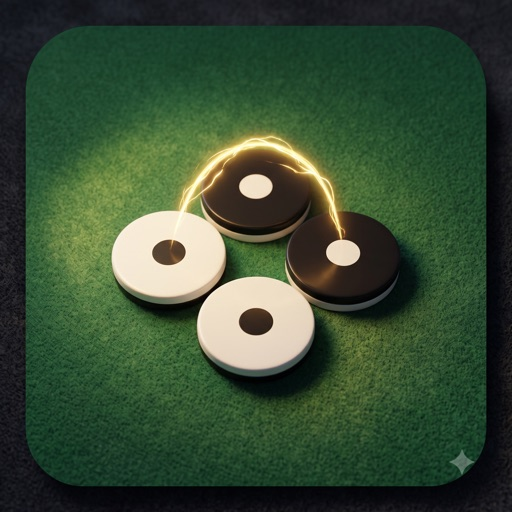

Direction D · 2026-08-30
One structure for every game page: five bands with reserved heights, one control vocabulary, and a start screen. The skin paints it; the frame decides where things live and that nothing above the board changes height while you play.
main@825a7fc)| The header wraps | On a 390px phone the shelf header is 110px on every game page, 64px on home — "How to play" and "↗" wrap to a second row. That is 46px of board pushed down before a game draws anything. |
| The board moves | Named causes, all above the board, all mid-game: the five versus games splice an *-ai-say paragraph in at index 1 when the AI has a line; Wyrdle's .wy-toast goes 0 → 1.5rem for 1.6s on every rejected guess; Blockdoku's .bdk-banner swaps between two sentences of different length on every select; Color Sort inserts a deadlock card; Trio Tumble's campaign nav row comes and goes with mode; Drop 4 appends a .drop4-thinking span that wraps the turn bar; every ▶ Settings <details> opens in flow. Below the board, .furrow-status and .crib-status have no min-height and collapse to zero. |
| No two games agree | Solitaire: modes · Undo · Hint · Settings · Moves. Othello: seats → Difficulty · You play · New game · Settings → a two-sentence banner. Trio Tumble: 3 mode pills + 6 objective pills + Hint · Settings + a 4-item campaign row + a HUD + a stars line — 13 pills in four rows before the board. Cribbage puts its verbs inside the table. Loose Ends has a splash and an overlay HUD; nothing else has either. |
| Desktop is a phone, stretched | A single centred column at 1280px: the board sits at 366px wide with 450px of nothing either side. The previous mock hub (2026-08-27) listed exactly this row as unfixed; the skin lift did not touch game pages. |
| No front door | Every game URL drops you onto a live board with the setup (opponent, difficulty, side, daily/free) as inline selects. Nothing says what the game is or lets you choose before the first move. |
| Two sheet systems | src/settings-sheet.ts (themed, tested, demo-driven) exists — and Bubble's aim sheet is its only user. Every other game hand-rolls a <details> of checkboxes with a copy-pasted helper. |
PHONE (390) DESKTOP (≥ 900) ┌──────────────────────────────┐ ┌─────────────────────────────────────┬──────────────┐ │ ① shelf bar 56px fixed│ │ ① shelf bar │ │ ├──────────────────────────────┤ ├─────────────────────────────────────┤ ② name ⋯ │ │ ② game bar ‹ Othello ⋯ 48 │ │ │ ③ meters │ ├──────────────────────────────┤ │ │ │ │ ③ meter row (seats / score) │ │ ④ stage │ ⑤ verbs │ │ 56px │ │ board fills the height │ │ ├──────────────────────────────┤ │ │ setup │ │ │ │ │ (read-only) │ │ ④ stage — the board │ │ │ │ │ owns the remaining height │ │ │ settings │ │ transient things overlay │ │ │ (inline) │ │ │ │ │ │ ├──────────────────────────────┤ │ │ how to · ↗ │ │ ⑤ dock ↶ Undo · ✦ Hint · ⟳ │ └─────────────────────────────────────┴──────────────┘ │ 72px │ the dock and the rail are the SAME panel, reflowed └──────────────────────────────┘
position:absolute over the stage and never in flow. The board's top edge is the same pixel from the first move to the last. (Align already does this with .al-callout { min-height }; it is the one game that got it right.){ meters, verbs, setup, preferences } once and never touches the chrome.Phone frames are 390 × 844; desktop frames are 1000 × 680 (a laptop, not a monitor — the rail must earn its place at the small end). Both palettes via the switch above. Each row is one state of the same frame.
Every URL opens here when no game is in progress: the art, the name, one line, the setup card, Play. The setup card is the same one the "New game" sheet shows.
Flank a line of discs to flip it. Most discs when neither side can move wins.
Flank a line of discs to flip it. Most discs when neither side can move wins.
When the progress store holds a game in progress, the start screen is a card, not a poster: the icon stays, the art steps back, and the summary line comes from the store without loading the engine. The frame is already in place behind it, so Continue is a fade, not a navigation.

Move 14 · you lead 9–4 · The Engine, Medium
Move 14 · you lead 9–4 · The Engine, Medium
Seats in the meter row, verbs in the dock, the instruction as a one-time toast over the stage. On desktop the dock stands up as the rail and the board takes the height.
Pixel-identical geometry to row 3. The Engine's seat pulses and its sub-label swaps to "thinking…" inside a slot that was already 12px tall; the verbs grey out. Nothing is inserted anywhere.
Daily/free is setup, so it is a chip in the game bar. Moves, stock and home are meters. Undo · Hint · Auto · New deal are the verbs. The wide felt finally has room on desktop.
Today: 3 mode pills + 6 objective pills + Hint · Settings + a 4-item campaign row + a HUD + a stars line, in four rows. Under the frame: one chip (Campaign · 3 of 6), one meter row, five verbs. Objectives and the campaign level are setup; they live on the start screen and in the Levels sheet.
The shared settings-sheet.ts, finally used by every game: common rows first, the game's own rows second. A bottom sheet on the phone; on desktop there is no sheet — the same rows are inline in the rail (rows 3–6), so a preference is never more than one click away.
Setup, separated from verbs. The same card as the start screen; changing it abandons the game in progress and says so. A sheet on the phone, a dialog on desktop.
The game in progress is abandoned — it is not recorded.
The game in progress is abandoned — it is not recorded.
Hiding chrome is the point here: the shelf bar goes, the seats collapse into the game bar, every verb sits behind ⋯. Not the default — Undo and Hint two taps away is the wrong trade for normal play — but exactly right when the player asked for the board and nothing else.
Every control the sixteen games render today, sorted into the three homes. A game declares its rows once; the frame renders them in the dock or the rail.
| Home | Shared (every game that has it) | Game-specific |
|---|---|---|
| Verbs → dock / rail 3–5, in this order | Undo · Hint (flips to "I'm stuck" / "I'm done" when hints are off, per §6) · New game… (opens the setup sheet) · Settings (phone only; inline on desktop) | Solitaire Auto-home · Trio Tumble Restart, Levels · Color Sort Restart · Cribbage Throw to crib / Go (phase verbs — stay in the table, they ARE the move) · Bubble Fire (stays with the aim bar, below the board) · Align pause · Loose Ends lives/hint (already an overlay) |
| Setup → start screen + New game sheet read-only in the rail | Daily / free (Today's deal, Today's board, Today's word, Marathon) · Opponent + difficulty · Which side / seat / who opens | Trio Tumble objective (6 pills) and campaign level · Bubble Levels / Classic · Align Sprint 40 · Color Sort Daily / Endless · Blockdoku difficulty (a select in Settings today, but it restarts — so it is setup) · Cribbage hand-on-top (a seat choice) |
| Preferences → settings sheet common first, game second | Hints · Declare assistance · Sound (the music bar's switch, mirrored) · Vibration | Tutor (5 versus games) · Local AI opponent + disclosure · Bubble aim guide, timer, and the whole aim sheet · Align move speed · Color Sort skin, fruit icons, strict · Cribbage muggins, peg-board style · Drop 4 mark |
| Meters → meter row / rail | Seats + scores + whose move (versus) · Score / moves / lives / best (solo) · Stars | Trio Tumble swaps left, next star · Bubble shots left, "stack drops in N" · Wyrdle guesses left · Blockdoku streak · Align combo callout (already reserved-height) |
| Not a band → toast over the stage, or gone | The instruction banner (→ start screen + How to play + a first-move toast) · "X is thinking…" status text (→ seat state) · the AI's banter line (→ a speech-bubble toast anchored to its seat) | Wyrdle's rejected-word toast · Blockdoku's select/deselect sentence · Color Sort's deadlock card (→ a toast with Undo / Restart in it) · Checkers "keep jumping" · Dots "goes again" (→ seat sub-label) |
Row 2 needs one thing the shelf does not have: a record of a game in progress. src/shelf.ts is explicit that today the shelf knows only which games you opened. The store is small because every Tier-1 game already is a seed plus a move list — resume is replay.
localStorage fun-progress-<gameId> one key per game; the newest game wins, there is no history
{
v: 1,
status: "in-progress" | "finished", finished entries are kept only so the card can say "Won yesterday · play again"
startedAt, updatedAt: ISO, "2 hours ago" on the card; daily entries expire at local rollover
setup: { mode: "daily:2026-08-30" | "free", seed, ...gameSetup }, the New game card, as chosen — opponent, level, side, objective
record: <the game's own serialised state>, for Tier-1: the move list the outcome record already carries; replayed through the core on resume
summary: { line: "Move 14 · you lead 9–4", meters: { you: 9, engine: 4 } } what the card and the rail show WITHOUT loading the engine
}
| What a game adds | Two optional members on GameModule: snapshot(): Progress (called by the frame after every move — the frame owns when, the game owns what) and resume(p: Progress). A game without them gets the start screen but never a continue card. Tier-1 games implement snapshot in a few lines because their outcome record is already the move list. |
| What the frame owns | Reading and writing the key, the expiry rule, the summary on the card and in the rail, clearing on New game, and marking finished when the result screen shows. The shelf's home page gets a real "Continue" for free — the same summary line, today from the same store rather than from the "last opened" timestamp. |
| Rules worth writing down | Undo state is part of the record (a resumed game must know it used assistance). A ?r= share never touches the store. Storage denied → no card, never an error (the shelf's existing rule). The record is validated on the way in, like every stored shape here: a store written by a previous version is untrusted data. |
| Later, not now | Same envelope shape as pond-docformat, so a synced or exported progress file is a format change, not a redesign. Not built in the first pass. |
| A · Dock | B · Rail | C · Board-only | |
|---|---|---|---|
| Phone | Verbs always visible at the thumb; the board loses 72px to the dock. recommended | Same as A — a rail has no room on a phone | Biggest board; every verb behind ⋯ (Undo two taps away, Hint hidden — the two things a stuck player wants) |
| Desktop | The phone frame, widened. Board stays ~440px; the rest is margin | Board fills the height; verbs, setup and settings visible without a sheet. recommended | Board fills the width; a 1180px page with one ⋯ button |
| Stability | All three hold rule 1 — bands are fixed-height and transient things overlay. C is stable by having less; A and B by reserving. | ||
| Cost | One component (`GameFrame`) + a per-game spec; each game's controls row is replaced, not restyled | A plus one breakpoint that reflows the same spec into a column | A menu component; the least chrome to build, the most to explain |
Recommendation: A on phones, B on desktop — they are one panel with one breakpoint. C is worth keeping as the full-screen (⤢) mode, where hiding chrome is the point.
| The frame | One module, src/game-frame.ts: renders bands ②③⑤ from a spec { title, mode, meters, verbs, setup, preferences }, owns the sheets, and reflows to a rail at ≥ 900px. The chrome (chrome.ts) stops rendering How to play / ↗ in the shelf bar and hands them to the frame — the 110px header goes back to 56px on every game page. |
| Per game | Replace the hand-rolled .sol-controls / turnbar / banner / <details> block with a spec; move the instruction sentence to the start screen; route status text into seat sub-labels or toasts. The board and its rules do not change. Twelve games already share solitaire's classes, so the diff is mostly deletion. |
| The sheets | settings-sheet.ts already renders toggle / range / choice rows with demos; it gains a section header and moves into a bottom sheet (phone) or the rail (desktop). The setup sheet is the same renderer with a Start button. |
| Tests that carry over | RESPONSIVE-DESIGN's centreline and 360px overflow checks stay. New, and the point of the exercise: a browser test that records the board's boundingBox().y at move 1 and asserts it is unchanged after the engine moves, a hint fires, a word is rejected, and settings open — the height-jump becomes a red board, not a feel. |
| Continue | Decided 2026-08-30: build the progress store, reusable across games (section above). First land shows the poster; a return with a game in progress shows the continue card inside the frame, icon kept. |
| Splash every time? | Decided 2026-08-30: the poster on first land (no progress), the continue card when there is progress. A ?r= link shows the record card instead of either. |
| Fullscreen | ⤢ today only hides the shelf header. Under the frame it could also collapse the dock into ⋯ (approach C) — is that what "full screen" should mean? |
| Verbs cap | Five is the ceiling in the dock at 390px with labels. Cribbage and Bubble keep their phase verbs on the board; is there any game that genuinely needs six? |
| Art | Every game ships src/games/<id>/assets/icon.jpg (512²) and splash.jpg (portrait, 1200 tall); Trio Tumble and Cribbage also have splash-landscape.jpg. The portrait splash is the phone start screen as-is. On desktop the portrait works as a left panel (row 1), but a landscape source reads better where one exists — worth commissioning landscape for the rest, or accepting the portrait-left layout as the desktop rule. (An earlier draft of this row said five games had no art; that was read from mocks/README.md, dated the day before the art landed.) |